TouchSim generator functions
TouchSim provides a number of functions to generate commonly used AfferentPopulation and Stimulus objects. Functions starting with affpop_ generate AfferentPopulations, functions starting with stim_ generate Stimulus objects, and functions starting with shape_ generate pin layouts that can form the basis of complex shapes indenting the skin.
Contents
affpop_single_models
a = affpop_single_models(loc,class,varargin): Constructs an AfferentPopulation containing all 17 individual neuron models or a subset.
Inputs
- loc: Location, default [0 0].
- class: Afferent class, all if empty.
- varargin: Parameters to be passed to Afferent constructor.
Examples
% generate all 4 SA1 models, located at the origin, turn off input jitter a = affpop_single_models([],'SA1','noisy',false); a.class
ans =
1×4 cell array
'SA1' 'SA1' 'SA1' 'SA1'
a.afferents(1).location
ans =
0 0
a.afferents(1).noisy
ans = logical 0
affpop_linear
a = affpop_linear(dist,max_extent,class,idx,varargin): Constructs an AfferentPopulation with units spaced equidistant along a line, starting at the origin.
Inputs
- dist: Distance between neighboring afferent locations, default 1 mm.
- max_extent: Distance of farthest afferent, default 160 mm.
- class: Afferent class, all if empty.
- idx: Afferent model index, all if empty.
- varargin: Parameters to be passed to Afferent constructor.
Examples
a = affpop_linear(10,[],'PC',1);
plot(a)
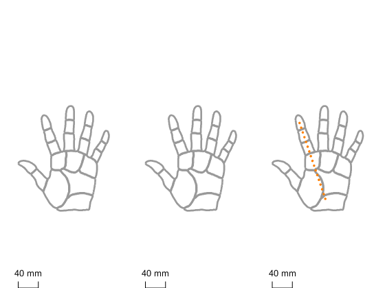 affpop_grid
a = affpop_grid(dist,max_extent,class,idx,varargin): Constructs an AfferentPopulation with units spaced equidistant across a grid, centered on the origin.
Inputs
- dist: Distance between neighboring afferent locations, default 1 mm.
- max_extent: Distance between farthest afferents, default 10 mm.
- class: Afferent class, all if empty.
- idx: Afferent model index, all if empty.
- varargin: Parameters to be passed to Afferent constructor.
Examples
a = affpop_grid(); plot(a,[],'region','D2d')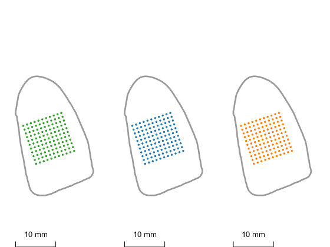
affpop_hand
a = affpop_hand(region,density_ratio,class,varargin): Constructs an AfferentPopulation covering the hand or regions of it, using realistic innervation densities.
Inputs
- region: Hand region to be populated, use [] for full hand, 'D2' for a full finger, e.g. D2 'D2d' for a part, e.g. tip of D2
- density_ratio: Allows to lower innervation densities (for faster compute times), while keeping the differences between regions intact, default 1. Different density ratios for tip, finger, and palm can be chosen by supplying a three-element vector.
- class: Afferent class, default [] (all).
- varargin: Parameters to be passed to Afferent constructor.
Examples
% populate whole hand, only generate 30% of afferents
a = affpop_hand([],0.3);
plot(a)
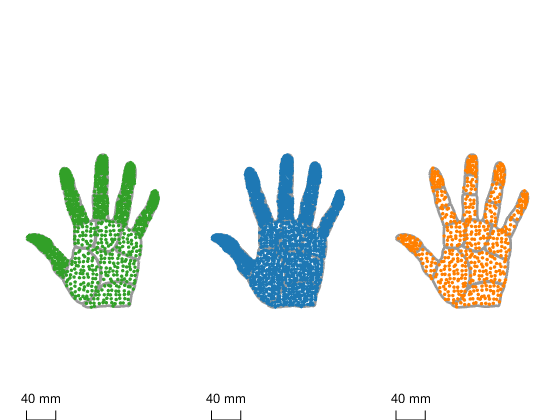 % populate only index finger, using true innervation densities a = affpop_hand('D2'); plot(a,[],'region','D2')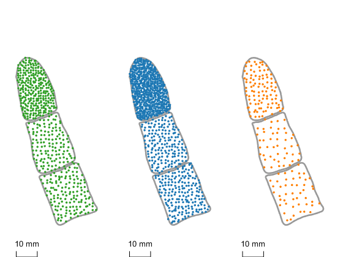
% populate index fingertip, using PC models only a = affpop_hand('D2d',[],'PC'); plot(a,[],'region','D2d')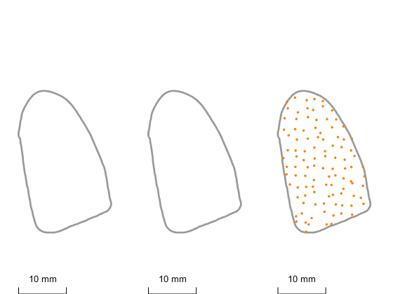
stim_ramp
s = stim_ramp(amp,len,loc,samp_freq,ramp_len,ramp_type,pin_size,pre_indent): Constructs a Stimulus simulating a simple ramp-up/hold/ramp-down indentation using a single circular probe.
Inputs
- amp: Indentation amplitude in mm, default 1.
- len: Total duration of stimulus in s, default 1.
- loc: Stimulus location in mm, default [0 0].
- samp_freq: Sampling frequency in Hz, default 5000.
- ramp_len: Duration of on and off ramps in s, default 0.05.
- ramp_type: 'lin' or 'sine', default 'lin'.
- pin_size: Probe radius in mm.
- pre_indent: Static indentation throughout trial, default: 0
Examples
s = stim_ramp(0.75,0.25,[],[],[],'sine');
figure
plot(s)
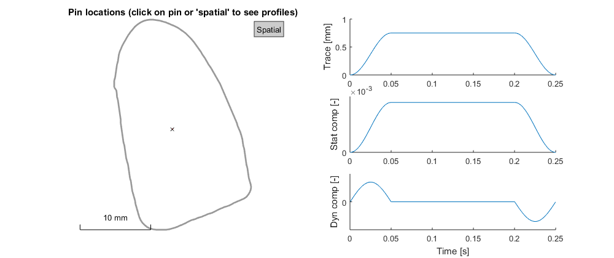 stim_sine
s = stim_sine(freq,amp,phase,len,loc,samp_freq,ramp_len,pin_size,pre_indent): Constructs a Stimulus simulating a (potentially poly-harmonic) sinusoidal vibration using a single circular probe.
Inputs
- freq: Vector of frequencies in Hz.
- amp: Vector of amplitudes in mm.
- phase: Vector of phases in degrees.
- len: Stimulus duration in s, default: 1
- loc: Stimulus location in mm, default [0 0].
- samp_freq: Sampling frequency in Hz, default 5000.
- ramp_len: Duration of on and off ramps in s, default 0.05.
- pin_size: Probe radius in mm.
- pre_indent: Static indentation throughout trial, default: 0
Examples
% generate a simple sine wave at 50 Hz.
s = stim_sine(50,0.1,[],0.2);
figure
plot(s)
Warning: Negative indentation found: proceed with caution !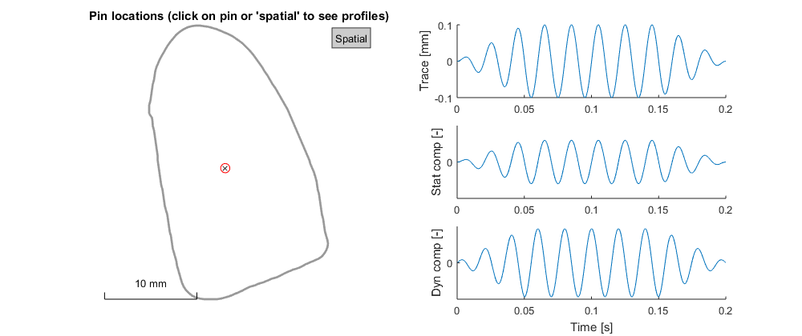
% generate a diharmonic wave
s = stim_sine([50 30],[0.1 0.2],[0 90],0.2);
figure
plot(s)
Warning: Negative indentation found: proceed with caution !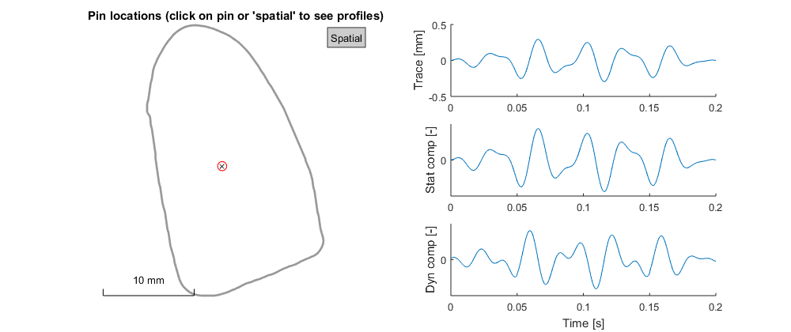
stim_grasp
s = stim_grasp(digits,trace,delay): Constructs a Stimulus simulating a multi-finger grasp, by indenting probes onto fingertips.
Inputs
- digits: Vector with finger indices (1-5), default [1 2].
- trace: Stimulus object containing a single pin and time course, whose parameters and trace will be applied to all pins in the grasp, default stim_ramp(0.75,.25,[],[],0.05,'lin',5).
- delay: Delays between individual fingers in starting their trace, default zeros(1,numel(digits)).
Examples
% generate two-finger grasp stimulus using thumb and index finger
s = stim_grasp();
figure
plot(s)
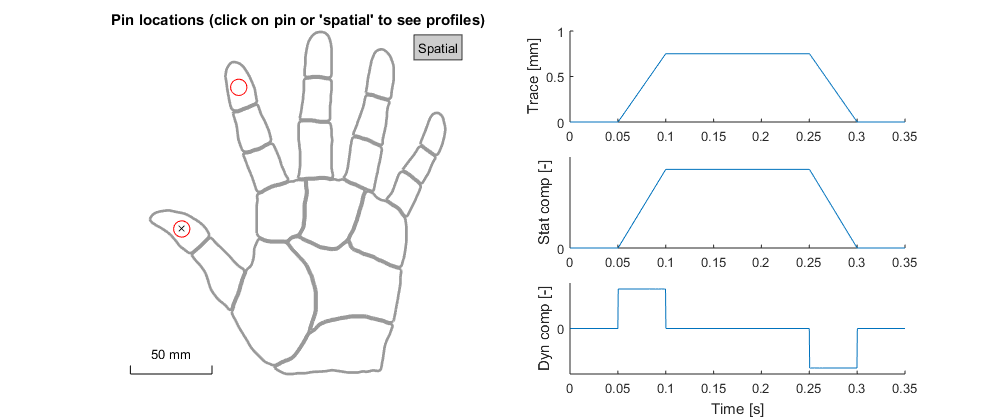 stim_indent_shape
s = stim_indent_shape(shape,trace,pin_offset,samp_freq): Constructs a Stimulus by applying a single-probe stimulus trace to multiple pins to generate spatially complex stimuli. Note that pin_radius in the trace object needs to be set so that neighboring pins are not overlapping, or will be automatically adjusted.
Inputs
- shape: Pin positions making up object shape, e.g. shape_bar().
- trace: Indentation trace, e.g. stim_ramp().
- pin_offset: Indentation offset for each pin, allows complex shapes that are not flat, default: 0.
- samp_freq: Sampling frequency of trace, only necessary if trace is not a Stimulus object.
Examples
% indent letter-shaped object into the skin, using ramp-and-hold % indentation. s = stim_indent_shape(shape_letter('B',10),stim_ramp([],0.2)); figure plot(s)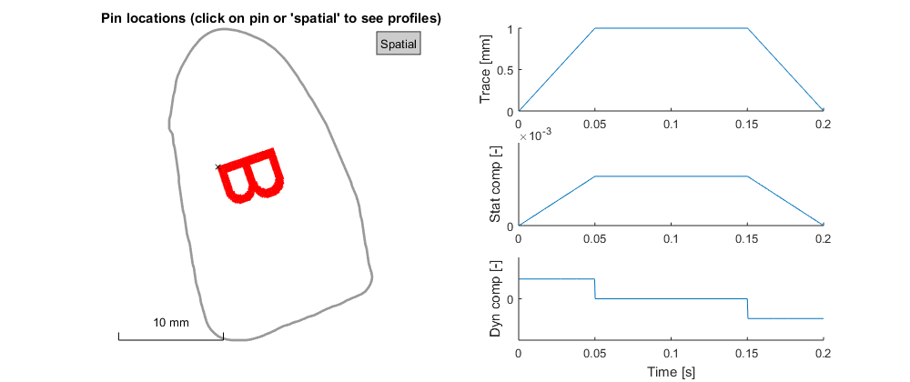
% generate bar stimulus and vibrate it on skin at 25 Hz. %s = stim_indent_shape(shape_bar(),stim_sine(25,0.3,0,0.2,[],[],[],[],0.5)); %plot(s)
shape_bar
shape = shape_bar(width,height,angle,pins_per_mm): Constructs a Nx2 matrix of pin locations in the shape of a bar.
Inputs
- width: width of the bar in mm, default 5 mm.
- height: height of the bar in mm, default 0.5 mm
- angle: Rotation angle of bar in degrees, default 0.
- pins_per_mm: Number of pins per mm, default 10.
Examples
% generate a bar angled at 45 degrees and indent into the skin shape = shape_bar([],[],45); figure plot(shape(:,1),shape(:,2),'o')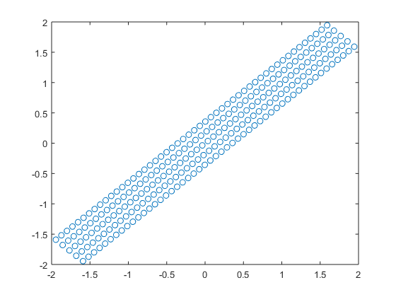
shape_circle
shape = shape_circle(radius,pins_per_mm): Constructs a Nx2 matrix of pin locations in the shape of a filled circle. Note that unless the pins do not move in synchrony, a single pin with bigger radius will leave to equivalent results, but execute much faster.
Inputs
- radius: Radius of the circle in mm, default 2 mm.
- pins_per_mm: Number of pins per mm, default 10.
Examples
% generate a circular stimulus shape = shape_circle(); figure plot(shape(:,1),shape(:,2),'o')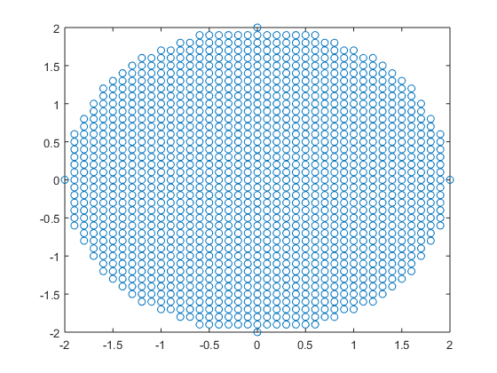
shape_square_grating
[shape,pin_offset] = shape_square_grating(shift,pins_per_mm,period, ridge_width,radius,depth,noedge): Constructs a Nx2 matrix of pin locations as well as a vector of pin offset that represent a square grating that can then be indented or scanned across the skin.
Inputs
- shift: Shift towards x direction in pins, default 0.
- pins_per_mm: Number of pins per mm, default 5.
- period: Spatial period of the grating in pins, default 10.
- ridge_width: Ridge width in pins, default period/2.
- radius: Overall contact radius in mm, default 8.
- depth: Groove depth in mm, default 1.
- noedge: Flag to set smooth edge (if true) or hard edge (if false), default true.
Examples
% indent square grating into the skin
[shape,pin_offset] = shape_square_grating;
s = stim_indent_shape(shape,stim_ramp(),pin_offset);
plot(s)
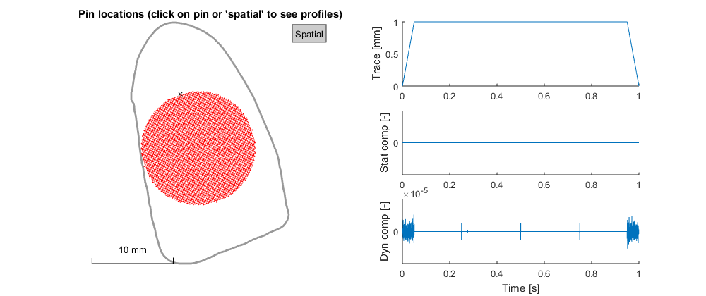 shape_letter
shape = shape_letter(letter,wid,pins_per_mm): Constructs a Nx2 matrix of pin locations in the shape of a letter.
Inputs
- letter: Letter, default 'A'.
- wid: Width of letter in mm, default 5.
- pins_per_mm: Number of pins per mm, default 10.
Examples
% generate a circular stimulus shape = shape_letter('X'); figure plot(shape(:,1),shape(:,2),'o')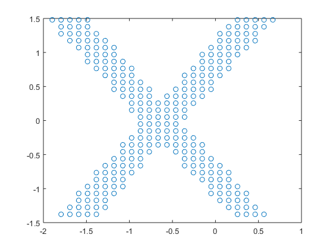